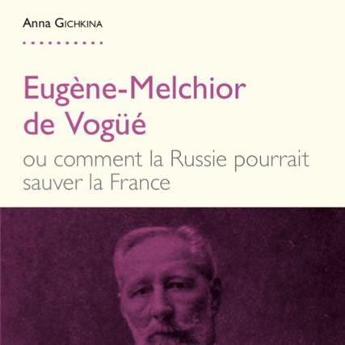
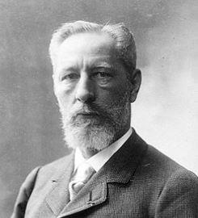
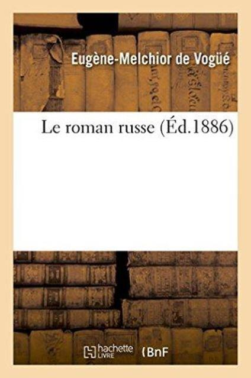
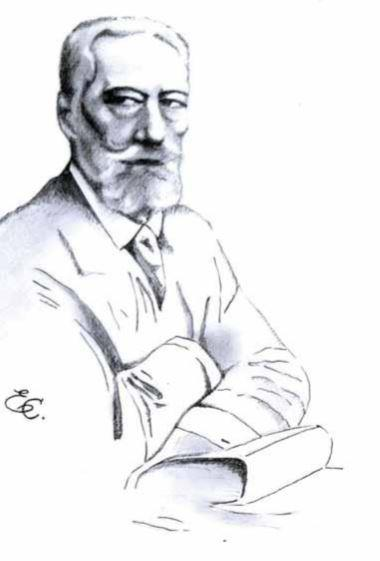
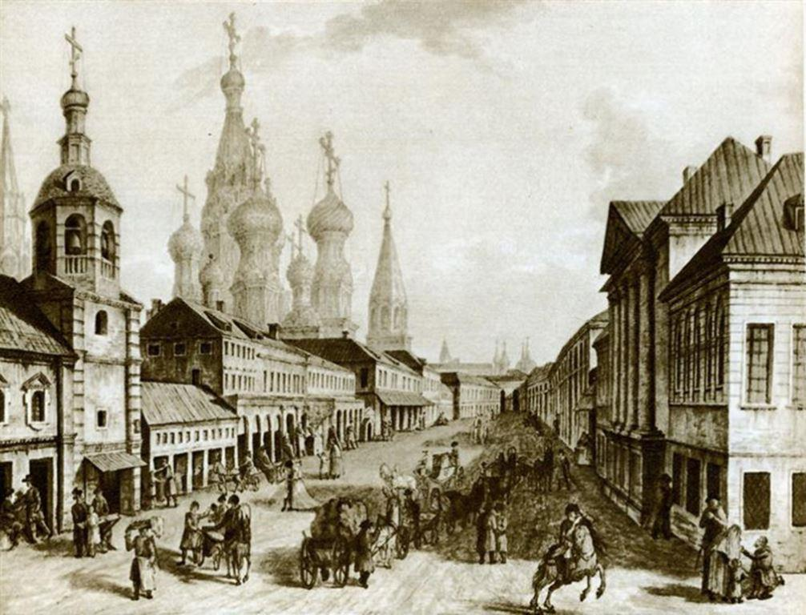

Anna Gichkina vient de publier « Eugène-Melchior de Vogüé ou comment la Russie pourrait sauver la France » ¹ Ce livre s'inscrit, à sa manière, dans la lignée des ouvrages se penchant sur le déclin français, avec deux particularités : la conviction que le salut de la France passera par la restauration des valeurs chrétiennes et que, pour cela, l'exemple à suivre est celui de la Russie.
Dense et foisonnant, très documenté (plus de 500 références), et en même temps très accessible, l'ouvrage d'Anna Gichkina présente une triple dimension. C'est d'abord une biographie – comme l'y invite la collection dans laquelle il est paru –, celle du vicomte Eugène-Melchior de Vogüé, diplomate et écrivain français, un peu oublié aujourd'hui.
C'est ensuite une présentation, pour ne pas dire un traité, celle de la réception de la littérature russe en France à la fin du XIXe siècle à travers le principal ouvrage de Vogüé, Le Roman russe, publié en 1886, qui permet à toute une génération de Français de découvrir la littérature russe et, à travers elle, la Russie, contribuant ainsi fortement au rapprochement entre les deux pays qui interviendra quelques années plus tard. C'est enfin un manifeste – comme le sous-entend le titre du livre – qui souhaite montrer et démontrer toute l'actualité de la démarche de Vogüé pour notre pays aujourd'hui.
Le vicomte Eugène-Melchior de Vogüé, qui appartient à une vieille famille du Vivarais (le village de Vogüé est situé à quelques kilomètres au sud d'Aubenas), est né à Nice en 1848. Après ses études et une courte carrière militaire pendant la guerre de 1870, il entre dans la diplomatie sur les conseils de son cousin, lui-même diplomate, Melchior de Vogüé (1829-1916) avec lequel il est souvent confondu. Une première affectation comme attaché d'ambassade à Constantinople (1871-1877) lui permet de découvrir l'Orient qui va vite le séduire. Mais c'est son nouveau poste de secrétaire d'ambassade à Saint-Pétersbourg (1877-1883) qui va constituer pour lui une véritable révélation, celle de la Russie à laquelle il consacrera désormais toute sa vie.
Marié en 1878 à Alexandra Annenkova, demoiselle d'honneur de l'Impératrice de Russie, ayant appris en deux ans la langue russe qu'il manie avec aisance, c'est par les lettres qu'il veut faire partager sa passion. De retour en France, il souhaite se consacrer entièrement à la littérature mais, rattrapé par son nom et la position de sa famille, il accepte de devenir député de l'Ardèche (1893-1898), menant ainsi de front une carrière politique, qui ne l'enthousiasme guère, et une carrière d'écrivain, sa seule véritable ambition, qui le conduit en 1888, à l'âge de 40 ans, à l'Académie française où il accueillera à son tour, en 1894, son ami et compatriote ardéchois Paul Bourget. Après s'être adonné lui-même au roman à partir de 1897, il meurt prématurément à Paris en 1910.
Son principal ouvrage, donc, est Le Roman russe ², publié quelques années après son retour en France, en 1886. Il s'agit de la réunion, au sein d'un même recueil, de six articles de l'auteur parus auparavant dans La Revue des Deux-Mondes et La Revue bleue. Même si le mot roman désigne ici le genre littéraire, à travers cinq écrivains russes majeurs, Alexandre Pouchkine (1799-1837), Nicolas Gogol (1809-1852), Fiodor Dostoïevski (1821-1881), Ivan Tourgueniev (1818-1883) et Léon Tolstoï (1828-1910), le terme peut aussi être appréhendé comme celui du récit historique, pour ne pas dire épique, de la Russie. Comprendre et faire comprendre la Russie par le roman n'est pas fortuit, car dans la Russie du XIXe siècle, le roman va plus loin que ce que le mot signifie pour l'Occident. Plus expressif que la poésie, il est aussi bien souvent, au-delà des aventures de ses personnages, le seul moyen de faire passer des idées philosophiques toujours très surveillées par une censure tatillonne.
Ainsi le roman russe touche-t-il à tout, aussi bien, outre la philosophie, la politologie, la sociologie, que l'histoire et la religion, justifiant la belle expression de Vogüé, « la littérature est la confession des sociétés ».
« Jamais livre ne tomba mieux à son heure », écrira plus tard Charles Corbet à propos du Roman russe, car, pour reprendre l'expression de l'historien Hans-Robert Jauss, il correspondait à « l'horizon d'attente » de la société française. En effet, la publication du Roman russe, intervient quelques années après la défaite de 1870 qui a plongé la France dans l'inquiétude. La France se sent seule face à l'Allemagne, et ne peut se rapprocher d'aucun de ses voisins, notamment de la Grande-Bretagne, en raison de la rivalité coloniale (rappelons qu’il faudra attendre 1904 pour que soit conclue l'Entente cordiale). Dès lors, malgré l'opposition politique entre les deux régimes, l'idée d'un rapprochement entre la France et la Russie se fait progressivement jour. Déjà préparée au plan économique par le développement des investissements français en Russie à partir de 1880, l'Alliance franco-russe est consacrée en 1891 avec, en particulier, la réception triomphale de la Marine française à Cronstadt le 25 juillet 1891. Sans doute serait-il excessif de dire que cette alliance est le résultat du Roman russe, mais il est certain que l’œuvre d'Eugène-Melchior de Vogüé a préparé le terrain sur le plan littéraire, comme l'ont fait Louis Léger sur le plan linguistique, Anatole Leroy-Beaulieu sur celui de la connaissance de la civilisation russe, et Arthur Rimbaud par ses travaux historiques.
Si Vogüé n'a pu être qu'enchanté par cette alliance, son propos n'avait pas cette seule ambition. Homme de lettres, il voulait faire partager à ses compatriotes et à ses contemporains son engouement pour la littérature russe et, au-delà, la culture russe et, force est de constater qu'il y est parvenu. On a ainsi assisté à une accélération des tirages des romans russes après la publication de son ouvrage, notamment Guerre et Paix de Tolstoï, sorti en France en 1884. Pour autant, ce succès sera de courte durée, en raison d'un déplacement à la fin du siècle et du goût du public français pour la littérature scandinave. Néanmoins, la culture russe est désormais bien installée en France, comme en témoigne le succès durable de la peinture russe et, surtout, celui des ballets russes introduits par Serge de Diaghilev. Cette slavophilie se manifeste également avec la création, à Paris, de l’École russe des hautes études sociales, où enseigne Eugène-Melchior de Vogüé.
Mais plus encore que la littérature en soi, c'est le rôle de la religion dans la littérature russe qui intéresse au plus haut point Eugène-Melchior de Vogüé, où celle-ci occupe toujours la place principale, faisant dire à Thomas Mann que « la littérature russe est une littérature sainte ». Pour Vogüé, elle est même comparable à la Bible, au regard de son rôle prophétique. Le rôle majeur de la religion participe de ce qu'on appelle « l'âme russe » dont Anna Gichkina pense qu'Eugène-Melchior de Vogüé l'avait mieux compris que bien des Russes. Indépendamment du poids de l'orthodoxie, l'âme russe est la synthèse de plusieurs éléments : le primat du sentiment sur la raison, la présence du chaos, à l'image de la géographie du pays, la nature contradictoire de la pensée, la foi cohabitant souvent avec le nihilisme, l'esprit de communion, le « nous » russe s'opposant au « je » occidental et la destinée messianique de la Russie, appelée à promouvoir une unité universelle des êtres humains, ce que le poète et philosophe russe Vladimir Soloviev (1853-1900) appelle « l'idée russe ».
Cette idée, Eugène-Melchior de Vogüé la partage très largement de même qu'il professe un christianisme très proche de celui de son inspirateur. Sa vision de la religion l'amène à souhaiter « une Église transformée, débarrassée du pouvoir temporel, plus large, vraiment apostolique, une Église pénétrée du véritable esprit du Christ » ce qui conduit Henry d'Allens, dans la thèse qu'il consacre à ce courant en 1904, à considérer Vogüé comme le chef de file du néo-christianisme. Sans doute n'en est-on pourtant qu'aux prémices de cette renaissance catholique qui se développera après la disparition de Vogüé. Le fait est, néanmoins, que Vogüé a jeté les bases d'une approche œcuménique avec l'orthodoxie, même s'il n'avait pas lui-même d'attirance particulière pour cette confession, à l'égal de l'abbé Fernand Portal avec l'anglicanisme, sans pour autant en faire un précurseur du modernisme trop éloigné de sa nature conservatrice.
Cette attitude reflète le caractère dualiste de Vogüé, bien en phase avec l'âme russe. Patriote et cosmopolite, conservateur libéral et nostalgique de l'Ancien Régime, « esprit libre et cœur traditionnel », il voit en la Russie l'exemple de la synthèse du passé et du présent, de la matière et de l'esprit. Ce rêve de synthèse l'accompagnera toute sa vie, ce qui le fera croire profondément à la conciliation entre le cœur et la raison, la tradition et le progrès, l'autocratie et la démocratie, la religion et la science, l'universalisme et le particularisme.
S'appuyant ainsi sur l'exemple russe, il veut renverser le courant moral et intellectuel de la France de son époque pour la conduire à un retour à la religion, sinon comme foi partagée, du moins comme socle de valeurs morales communes. En effet, la France de la fin du XIXe siècle se trouve sous l'emprise d'un triple mouvement peu propice à l'épanouissement du christianisme : le pessimisme inspiré par le philosophe allemand Arthur Schopenhauer (1788-1860), le scientisme du philosophe français Auguste Comte (1798-1857) et, au plan littéraire, le naturalisme de l'écrivain français Émile Zola (1840-1902). Toutefois, au moment où Vogüé s’attelle à son œuvre, ce courant commence à s'essouffler avec l'apparition du symbolisme, dont le manifeste est publié la même année que Le Roman russe, réaction plutôt que véritable mouvement, appelant à une renaissance spirituelle. Mais peu adepte du spiritisme et de l'occultisme auxquels s'adonnent certains de ses représentants, Eugène-Melchior de Vogüé souhaite que « l'Occident se tourne vers l'Orient pour trouver la lumière », selon l'expression du philosophe russe Nicolas Berdaiev (1874-1948), en l'occurrence la lumière du Christ. Partant du conservatisme orthodoxe russe, Vogüé veut rappeler à la France, en crise autant politique que spirituelle, l’ensemble du savoir qui fonde la vie de l’être humain : compatir, aimer, aider et d’autres sentiments issus de la morale chrétienne. Toute son œuvre est ainsi imprégnée du désir d’aider la France, de la sauver du désastre spirituel, politique et littéraire. Et c'est la Russie, et elle seule, qui, selon lui, est capable d'aider la France à surmonter les crises qu'elle vit.
En dépit de sa conviction et de son indéniable éloquence, il est patent qu'Eugène-Melchior de Vogüé n'a pas réussi à entraîner la majorité de ses concitoyens dans un mouvement massif de retour au christianisme. Pourtant, Anna Gichkina estime que, non seulement il avait raison à son époque, mais que son message reste d'une brûlante actualité. Elle pense, en effet, que la société française contemporaine se délite en bornant son horizon à la seule consommation. Les mêmes maux qu'au temps de Vogüé semblent frapper notre pays où, pour reprendre la formule de Denis Tillinac dans L’Âme française (éd. Albin Michel, 2016), les intellectuels en vue sont « des sceptiques égocentrés proches du nihilisme ».
De fait, le propos de Vogüé qui dénonce le pessimisme, « matérialiste résigné, pourvu qu'il ait sa provende de plaisir quotidien », aurait pu être écrit aujourd'hui. De même, cette remarquable citation d'Hippolyte Taine à Paul Bourget pour qui le christianisme a « une grande paire d'ailes indispensable à l'âme humaine (et que), toujours et partout, depuis dix-huit cents ans, sitôt que ces ailes défaillent ou qu'on les casse, les mœurs publiques et privées se dégradent ».
Par l'énergie communicative et convaincante qui s'en dégage, ce livre nous donne envie de croire à cette nouvelle renaissance chrétienne. Ce qui se passe en Russie constitue-t-il une référence ? Cela reste sans doute à approfondir et à purifier car notre attachement à la distinction entre l’Église et l’État nous fait regarder comme une chose étrange le « césarisme » de l'orthodoxie. En tout cas, si Eugène-Melchior de Vogüé peut sembler lointain à nos contemporains, on peut faire confiance à l'enthousiasme, à l'intelligence et au talent d'Anna Gichkina pour rendre sa pensée à nouveau actuelle et ses idées des plus désirables.
F. de C.
1. Anna GICHKINA, « Eugène-Melchior de Vogüé ou comment la Russie pourrait sauver la France », avant-propos de Luc Fraisse, postface d'Henri de Grossouvre, collection Biographies, éditions L'Harmattan, 2018, 393 pages.
Partager cette page